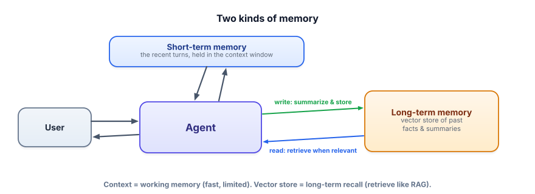

Memory
A model only remembers what is in its context window right now. That is short-term memory.
Long chats overflow the window, so older turns get squeezed into a short summary.
Long-term memory lives outside the model, in a database or a vector store.
When a new question comes in, the agent looks up the relevant memories and adds them to the prompt.
That lookup is RAG, pointed at the agent's own history.
Agent memory is like a student's notebook during a long school year. You can't remember every word the teacher said, so you write down key points (summaries) and keep a labelled index at the back so you can find 'fractions' fast before a test (retrieval).
| In the picture | In the real system |
|---|---|
| What you can hold in your head in class | Short-term memory: the context window |
| Writing key points in the notebook | Summarising older turns to free tokens |
| The labelled index at the back | Vector memory: stored facts, retrieved by similarity |
| “Last time, she preferred email” | Episodic memory: a specific past event |
| “Her timezone is IST” | Semantic memory: a distilled fact |
Where the picture breaks. A student notices when notes contradict each other; an agent will retrieve an old wrong note and trust it just as much as a new correct one unless you date and update memories.
Going deeper
An agent that forgets everything between steps — or between sessions — can’t accomplish much. Memory is how an agent holds onto what it has learned, despite a small context window. And the good news: you already know the core trick. It’s RAG, pointed at the agent’s own history.
Why memory is a real design problem
Recall from Track 1.4 that the model only knows what’s in its context window right now, and that window is finite. For a long agent run — dozens of steps, a multi-turn conversation, a task spanning days — the full history won’t fit, and re-sending everything is expensive and invites “lost in the middle.” So you need a strategy for what to keep in the window, what to store outside it, and how to bring the right past information back when it’s relevant. That strategy is memory.

Short-term memory is the information currently in the context window — the recent conversation and the current task’s trace. Long-term memory is information stored outside the model (a database or vector store) that you retrieve and inject when relevant. Within long-term memory, episodic memory recalls specific past events (“last time, the user preferred email”), while semantic memory holds distilled facts (“the user’s timezone is IST”). Writing to memory and reading from it are deliberate steps you build.
The two techniques you’ll actually use
Summarization (managing short-term memory). When the conversation grows past a budget, compress older turns into a running summary and keep recent turns verbatim. The summary preserves the gist while freeing tokens — a controlled forgetting.
Vector memory (long-term recall). Store facts/summaries as embeddings; when a new query arrives, retrieve the most relevant memories and add them to the context. This is RAG (Track 3) with the knowledge base being the agent’s own history — and it’s how an assistant “remembers” your preferences across sessions.
Both techniques, minimal. Summarize to fit; store and retrieve to recall.
import numpy as np, ollama
from sentence_transformers import SentenceTransformer
def ask(prompt, system=None, model="qwen2.5:7b"): # one chat call; returns the reply text
msgs = ([{"role": "system", "content": system}] if system else []) + [{"role": "user", "content": prompt}]
return ollama.chat(model=model, messages=msgs)["message"]["content"]
embed = SentenceTransformer("all-MiniLM-L6-v2")
# --- short-term: summarize old turns when the convo gets long ---
def compress(old_turns):
text = "\n".join(old_turns)
return ask(f"Summarize this conversation in 3 bullet points, keeping key facts:\n{text}")
# --- long-term: a tiny vector memory you write to and read from ---
memory, mem_vecs = [], None
def remember(fact):
global mem_vecs
memory.append(fact)
mem_vecs = embed.encode(memory, normalize_embeddings=True)
def recall(query, k=2):
if not memory: return []
q = embed.encode([query], normalize_embeddings=True)[0]
top = np.argsort(mem_vecs @ q)[::-1][:k]
return [memory[i] for i in top]
remember("User prefers metric units and replies in the morning.")
remember("User is based in Bengaluru (IST).")
print(recall("what timezone should I schedule for?")) # -> both facts (k=2 and there are only 2 memories); use k=1 for just the closestThat’s the whole idea: summarize to keep the window lean, store and retrieve to recall the right thing later. Long-term memory is just RAG whose corpus is the agent’s experience.
Assumptions: a banking assistant handles 1,000,000 model calls a day. A long-standing user has 300 past turns of about 150 tokens each. Prices: claude-sonnet-5-5 input at $2 per million tokens (Claude models overview).
- Naive: resend everything. 300 x 150 = 45,000 tokens of history per call. 45,000 x $2/1M = $0.09 per call. If even that were the typical user, 1M calls = $90,000 a day on history alone, and the model has to find one fact in the middle of 45,000 tokens.
- Short-term memory. Keep the last 6 turns verbatim (900 tokens) plus a running summary of older turns (600 tokens).
- Long-term memory. Extract durable facts ('prefers Telugu', 'salary account at Kukatpally branch') into a per-user store with timestamps. Retrieve the top 5 facts (about 150 tokens) per query.
- New context per call. 900 + 600 + 150 = 1,650 tokens = $0.0033. At 1M calls: $3,300 a day, about 27x cheaper, with the relevant fact placed where the model will see it.
- Storage. 2,000,000 users x 200 facts = 400M memories. With all-MiniLM-L6-v2 (384 dimensions, model card) at 4 bytes per float: 400M x 384 x 4 = about 614 GB of vectors. Partition by user, so each search scans only that user's 200 vectors.
- Privacy cost. Those 400M memories are personal data: you need retention limits, deletion on request, and a hard user_id filter on every retrieval.
Watch the model forget
Shrink the context budget and watch the earliest turns fall out of the conversation. This is exactly what users experience as the assistant “losing the plot”.
- Short-term memory = the context window (fast, limited); long-term memory = an external store you retrieve from.
- Summarize old turns to fit the window; store + retrieve facts for cross-session recall.
- Long-term memory is RAG over the agent’s own history — the same embed/retrieve you already know.
- Distinguish episodic (past events) from semantic (distilled facts) memory.
- Memory is a deliberate write/read design, not something that happens for free.
A user tells your assistant “I’m vegetarian” in week 1. In week 3 they ask for dinner ideas and it suggests steak. What’s the fix?
Why does an agent 'forget' earlier turns in a long chat?
A user said 'I moved to Pune' in March. In October your assistant still schedules in Bengaluru, because retrieval returns both 'lives in Bengaluru' (Jan) and 'moved to Pune' (Mar) and the model picks the first. What is the right fix?
1. Classify as short-term or long-term memory: (a) the last 3 messages, (b) “the user’s account ID,” (c) the current task’s tool trace, (d) “last month the user complained about slow support.”
2. Why summarize old turns instead of just dropping them when the window fills?
3. What could go wrong if you store everything a user ever says in long-term memory and retrieve aggressively?
▸ Show solutions & reasoning
1. (a) short-term (recent context), (b) long-term (a durable fact), (c) short-term (this run’s working state), (d) long-term (a past episode worth recalling). The line is roughly “needed for this immediate step” (short-term) vs “might matter again later” (long-term).
2. Dropping old turns loses information the agent may still need (a fact established early, a decision made). Summarizing preserves the gist and key facts in far fewer tokens, so you free window space without amnesia. It’s controlled forgetting — keep the essence, discard the verbatim bulk.
3. Several failures: the memory store fills with noise, so retrieval surfaces irrelevant or stale facts that derail the agent; privacy risk grows (you’re hoarding personal data — Track 7); and contradictions accumulate (an old preference conflicting with a new one). Good memory is curated: store distilled, useful facts; prune or expire stale ones; and retrieve precisely, not greedily.
The hard part of agent memory isn’t storing — it’s deciding what’s worth remembering and when to surface it. Naively dumping every message into a vector store creates a swamp: retrieval returns near-duplicates, outdated facts, and irrelevant chatter that crowds the prompt. Mature memory systems do active curation: they extract salient facts (preferences, decisions, entities) rather than raw transcripts, deduplicate and update them (a new timezone overwrites the old), attach timestamps so recency can be weighed, and sometimes maintain a structured user profile alongside free-text memories. Retrieval then pulls a small, high-quality set rather than a noisy haystack.
Two more realities. First, memory inherits every RAG concern — chunking, embedding quality, retrieval evaluation — because it is RAG; if recall is poor, the agent “forgets” even though the fact is stored. Second, memory is where privacy and safety get serious: you’re persisting user data across sessions, so you need consent, retention limits, the ability to delete, and care that one user’s memories never leak into another’s context (Track 7). Treat the memory store as sensitive production data, not a convenience cache. Done well, memory is what makes an assistant feel like it actually knows you; done carelessly, it’s a liability that also gives worse answers.
labs/03_rag_local.pyFree and offline once set up: Ollama with qwen2.5:7b, plus the packages in labs/README.md. From the course folder:
python labs/03_rag_local.pyWhat to look for: Long-term memory is RAG over the agent's own history, so the RAG lab is the closest fit. Replace the documents with a list of 'memories' (user facts with dates), ask a question, and look at the retrieved chunks and their scores. Add a newer fact that contradicts an older one and see whether both come back. The lab does not do summarisation or memory updates; that is the part you would add.
Small samples: these labs use 5 to 20 cases so they run in minutes on a laptop. Where they report a rate, they print n and a 95% Wilson interval. Read them as a demonstration of the mechanism, not as a measured rate for your system; for that you need hundreds of cases and several seeds.
▸ Recorded output (our run, 2026-11-03, qwen2.5:7b on a laptop GPU)
out of the top 3. On this tiny corpus dense already wins; hybrid earns its keep on big corpora full of
near-identical codes (SKUs, error ids) that embeddings blur. Never assume: measure hit@k (lab 06).
5) Grounded answers with citations, and a refusal when retrieval is weak
Q: I was charged twice for one order. What happens now?
A: If you were charged twice for one order, the duplicate payment is reversed automatically within 3 business days [pay-01#0]. If it is not reversed after 3 business days, raise a billing ticket with both transaction ids.
citations=['pay-01#0'] all-cited-ids-were-retrieved=True
Q: Can I change my delivery address after the order has shipped?
A: No, you cannot change your delivery address after the order has shipped. According to [ship-03#0], the address can only be changed before the order is packed.
citations=['ship-03#0'] all-cited-ids-were-retrieved=True
Q: Do you deliver to Antarctica by drone?
A: I don't know based on our policies. (refused before calling the LLM: best cosine 0.27 < 0.35)
citations=[] all-cited-ids-were-retrieved=True
Look: every factual sentence carries an id you can check; the off-topic question is refused
cheaply by the retrieval threshold, so the model never gets a chance to make something up.Your numbers will differ a little run to run. Full log: labs/outputs. Source: labs/03_rag_local.py.
Warm-up. A conversation is at 9,000 tokens and your budget is 4,000. The last 8 turns are 2,400 tokens. How big can the running summary be, and what goes into it?
▸ Solution
4,000 - 2,400 = 1,600 tokens, minus room for the system prompt and retrieved facts (say 600), leaves about 1,000 tokens for the summary. Into it go decisions made, facts the user stated, open tasks and constraints ('budget under 50k', 'no flights before 9am'). Out go greetings, abandoned ideas and anything already captured as a long-term fact.
Transfer. Your support agent shares one vector store across tenants. A customer of company A sees a memory from company B. What failed, and how do you design it so it cannot happen again?
▸ Solution
Retrieval relied on similarity alone with no hard tenant filter, so a semantically close memory from another tenant ranked high. Fix: every memory row carries tenant_id and user_id; the retrieval function takes those from the authenticated session (never from the model) and applies them as a mandatory filter before similarity ranking, or you use a separate index or namespace per tenant. Add a test that queries as tenant A for tenant B's unique strings and must return nothing. Treat this as a data breach: notify, purge, audit.
Stretch. Design the memory write path for a personal assistant: what gets stored, when, and how stale or wrong memories are handled.
▸ Solution
After each session (not every turn, to save cost), run an extraction call that outputs candidate facts as JSON: subject, attribute, value, source turn, confidence. For each candidate, look up existing facts with the same subject and attribute: same value, refresh the timestamp; different value, supersede the old one and keep it as history; new attribute, insert. Skip low-confidence or sensitive categories unless the user asked to be remembered. Give facts a time-to-live by type (a preference lasts longer than a travel plan). Expose a 'what do you remember about me' view with delete. Evaluate with a set of conversations and expected final memory states.
Junior What is the difference between short-term and long-term memory in an agent?
▸ Model answer
Short-term memory is what is in the context window right now: recent turns, the current task's trace and any summary of earlier turns. It is fast but limited, and you pay for it on every call. Long-term memory lives outside the model, usually in a database or vector store; you write facts or episodes to it and retrieve the relevant ones into the prompt when needed. It is basically RAG over the agent's own history. Short-term memory is managed with trimming and summarisation; long-term memory with extraction, retrieval and updates.
Mid Context windows are now 1M tokens on some models. Why not just keep the whole history in context?
▸ Model answer
Cost, quality and privacy. Cost: you pay for every input token on every call, so a 200k-token history resent 50 times a day is real money even with prompt caching. Quality: models get worse at finding a specific fact as context grows, and old contradictory statements sit next to new ones with nothing marking which wins. Privacy: you are resending personal data in every request. A large window is useful headroom, but a curated memory with summaries and retrieval of a few relevant facts is cheaper, more accurate and easier to govern.
Senior How would you evaluate a memory system?
▸ Model answer
Build scripted multi-session conversations with known ground truth: facts stated, facts later changed, facts that should be forgotten. Measure write quality (did the store end up with the right facts and no contradictions), retrieval quality (recall@k of the needed fact for probe questions), and end-to-end answers (does the assistant use the current fact). Add negative tests: cross-user leakage must be zero, and deleted facts must never come back. Track memory size per user and retrieval latency over time, because memory stores grow without limit unless you prune them.
Your agents can reason, act, plan, and remember. But wiring each tool and data source by hand is tedious and non-standard. A new protocol fixes that. Next: MCP (Model Context Protocol).
In one line: Keep recent words, summarise the old ones, and look up the rest when you need it.